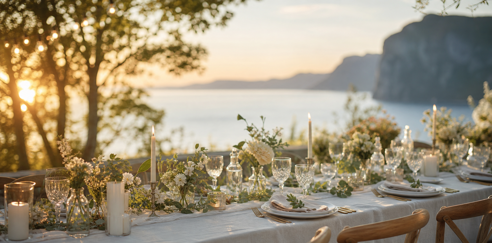

Oppmøte på Hill Marina i Arendal
Uformell aften med aktivitet, lave skuldre og oppladning til bryllupsdagen.

19-20. juni 2026 · Kristiansand / Grimstad
Vi skal gå fra medlåntakere til kone og ektemann, og vi gleder oss til å dele helgen med dere.
19. og 20. juni
Uformell aften med aktivitet, lave skuldre og oppladning til bryllupsdagen.
Viktig dag i morgen.
Buss går fra Arendal til kirken.
Vielsen starter i Randesund Kirke. Møt gjerne senest 13:00.
Buss fra Randesund Kirke til Bringsverd Kongsgård.
Festlokalet åpner på Bringsverd Kongsgård i Grimstad.
Buffet fra Madhuset, taler og god stemning rundt bordene.
Kake serveres før brudeparet åpner dansegulvet.
Åpen bar, musikk og feiring utover natten.
Sted
Vielsen er i Randesund Kirke. Bryllupsfesten er på Bringsverd Kongsgård, Bringsverdveien 83, 4885 Grimstad.
Herrer: mørk dress eller smoking. Damer: kjole.
Barn er velkomne i vielsen, men festen er barnløs.
Kristian Nordvik Thyssen tar imot taler og innslag. Telefon: +47 466 95 380.
Det er fri bar, men ingen skjenkebevilling. Ta gjerne med eget om dere har spesielle ønsker.
Overnatting og transport
Det settes opp buss fra Arendal til Randesund Kirke og videre til Bringsverd Kongsgård.
Maxitaxi til Kristiansand bestilles ved behov kl. 01:00 og 03:00. Det blir en liten egenandel.
Det er liten parkeringsplass ved kirken og parkering ved festlokalet. Kjør gjerne sammen.
Clarion Hotel Tyholmen og Thon Hotel Arendal er anbefalt. Thon-lenken på nettsiden har rabatterte priser.
Svarfrist 1. mars 2026
Vi ber alle gå gjennom informasjonen og fylle ut spørreskjemaet for deltakelse, buss og allergener.
Bruk skjemaet til å gi beskjed om dere kommer, eventuelle allergier og transportbehov.
Åpne spørreskjemaSvar helst innen 1. mars 2026.
Q & A
Ta kontakt med Kristian Thyssen på Kristianthyssen@icloud.com.
Ja. Det er åpen bar, men dere kan ta med eget hvis dere ønsker noe spesielt.
Fotograf er med under vielsen og starten av festen. Ta gjerne egne bilder og bruk #EmsogFred2026.
Ønskeliste ligger på bryllupsnettsiden. Det viktigste er uansett at dere kommer.